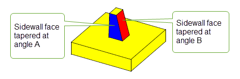
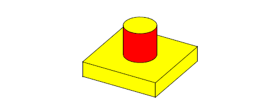
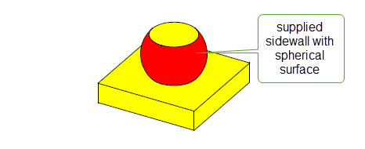
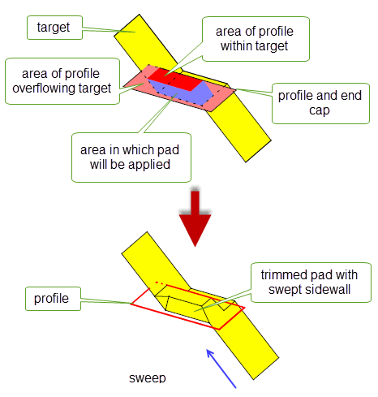
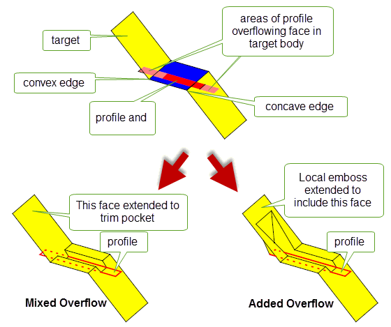

| |
Creating Emboss Features |
| <<< Shadow Curves | Chapters | Introduction To Sheets and Wires >>> |
The functions PK_BODY_emboss and PK_FACE_emboss provide you with generic, high-level functionality for adding protruding (pad) or indented (pocket) emboss features to a target body, the general shape of which can be described using supplied profiles.
For both functions, Parasolid automatically creates sidewalls for emboss features, based on a range of criteria you supply.
|
Note: This functionality supports facet geometry in the target body but only if the facet geometry is not modified in the result. |
Figure 43-1 Creating pad and pocket emboss features on a target body
In order to create an emboss feature, you need to supply:
Parasolid then creates a sidewall around the profile, limited by the target (or the specified faces) and the end cap, and based on further constraints supplied in the form of options to the function (described in Section 43.2, “Options”). The received bodies are described in more detail in the following table:
|
The profile describes the general shape of the emboss feature you want to create, depending also on constraints supplied by the other input bodies and data for the operation: for example, a circular profile will in general create circular emboss features. The profile supplied must be either a closed oriented wire or an open sheet without holes. It survives unchanged after the operation. |
|
|
The end cap places either a “roof” (for pads) or a “floor” (for pockets) on the emboss feature. Parasolid confines the sidewall so that it exists between the profile area projected on the target, and the end cap. The end cap supplied must be either a solid or sheet. It survives unchanged after the operation. |
|
|
For any emboss operation, the target is the body on which you want to place the emboss feature.
For both global and local emboss, the target body must be either a solid or sheet. It survives, and is modified after the operation. |
Figure 43-2 Orientation of input bodies in pad and pocket emboss features
In addition to the input bodies, you can supply an extensive set of options that further describe the nature of the emboss feature. This section describes the options that are available.
The table below provides a summary of the options that you can specify in both PK_BODY_emboss_o_t and PK_FACE_emboss_o_t.
tolerance |
Tolerance information for the emboss operation. Default: 1.0e-5 |
convexity |
Whether emboss features should protrude from the target, indent into the target, or a combination of both. See Section 43.2.1, “Convexity”, for more information. Default: PK_emboss_convexity_both_c. |
profile_on |
Where the profile for the operation is located. See Section 43.2.2, “Profile location”, for more information. Default: PK_emboss_profile_on_any_c |
sidewall_data |
A data structure containing information that specifies how the sidewalls for the emboss operation should be constructed. Construction of the sidewalls is a major part of the emboss operation, and there are a number of ways that you can control the final result. See Section 43.2.3, “Sidewalls”, for more information. |
overflow_data |
A data structure containing information that specifies how the emboss feature should be constructed in the event that the sidewall lies beyond the boundary of the target body (in the case of PK_BODY_emboss) or the specified faces on the target (in the case of PK_FACE_emboss). See Section 43.2.4, “Overflow”, for more information. |
unite |
Whether emboss features should be attached to the target (to create a single body) or produced separately. See Section 43.2.5, “Returning the embossed feature separately”, for more information. Default: PK_emboss_unite_sidewall_yes_c (attach features to target). |
update |
Update switch to maintain consistency when rebuilding models built in older versions of Parasolid. See Section 63.5.2, “Update control”, for information. Default: PK_local_ops_update_default_c. |
You can choose the convexity of the emboss features that Parasolid creates using the
convexity
option. By default, Parasolid creates both protruding embosses (pads) and indented embosses (pockets), but if required, you can specify that only one or other type is created.
When a non-default convexity is specified, attempting to create an emboss feature of the opposite convexity results in the error PK_emboss_bad_position.
By default, the profile you specify can be located anywhere. However, if required, you can use the
profile_on
option to indicate that the profile must be located on either the target or the end cap.
A major part of the emboss functionality involves the construction of the sidewall, and Parasolid provides you with a number of different methods and controls for you to specify its final appearance.
|
Note: In areas where the emboss feature overflows the boundary of the target body or the specified faces in the target, sidewalls are trimmed where necessary using the overflow data supplied in the options structure. See Section 43.2.4, “Overflow”, for details. |
Parasolid can construct a sidewall for you using one of three methods:
In all three cases, the geometry of the sidewall is formed by a set of ruled surfaces that pass through the boundary of the profile.
In addition to these methods of internal construction, you can supply a sidewall yourself.
The data required for sidewalls is supplied using the
sidewall_data
option, which uses the PK_emboss_sidewall_data_t sub-structure.
If the
sidewall
field of
sidewall_data
is PK_emboss_sidewall_tapered_c, then Parasolid creates sidewalls that are tapered between the specified target and end cap, usually based on a supplied draw direction and taper angle.
Figure 43-3 Pad emboss feature with tapered sidewalls
For tapered sidewalls, you should also set the following fields (some of which are optional).
taper_method |
The method used to created tapered sidewalls. Any of the following taper methods are allowed:
If offset tapering is used, additional information needs to be supplied using the |
draw_direction |
The direction of taper. This must be a unit vector. Default: (0,0,1). The draw direction also acts as a general reference direction for the face normals of the cap of the resulting emboss feature. See Section 43.3, “Constraints”, for more information. |
taper_angle |
|
offset |
For offset tapering: the offset distance for the operation. This should be left at its default value if any other tapering method is used. Default: 0 |
top_surface |
For offset tapering: the surface on which the profile edge's curve is projected to create the relevant offset curve. This should be left at its default value if any other tapering method is used. Default: PK_ENTITY_null |
Figure 43-4 Pad emboss feature with normal tapered sidewalls
Tapered sidewalls (when
taper_method
is not PK_taper_method_offset_c) are generally constructed such that they draft outwards from the end cap body to the target body. This ensures that the emboss feature created will be non die-lock, that is, it would be physically possible to draw the part from a mold in the specified draw direction. You can model a die-lock emboss feature, such as a dovetail, by supplying a negative
taper_angle
.
By default, if tapered sidewalls are created then a single taper angle is used for all faces in the sidewall. However, you can specify that different taper angles are used for any of the faces in the sidewall, as shown in Figure 43-5.
Figure 43-5 Pad emboss feature with tapered sidewalls using different angles
For sidewalls with multiple taper angles, you should set the following fields:
If the
sidewall
field of
sidewall_data
is PK_emboss_sidewall_ruled_c, then Parasolid creates sidewalls that are ruled along the normals of the faces in the supplied profile.
No additional information needs to be supplied in order to create this type of sidewall.
Figure 43-6 Pad emboss feature with ruled sidewalls
If the
sidewall
field of
sidewall_data
is PK_emboss_sidewall_swept_c, then Parasolid creates sidewalls that are swept.
For swept sidewalls, the sweep direction is taken from the specified
draw_direction
, which must be a unit vector. No other information needs to be supplied.
Figure 43-7 Pad emboss feature with swept sidewalls
If the
sidewall
field of
sidewall_data
is PK_emboss_sidewall_supplied_c, then you can supply your own pre-constructed sidewall to use in the emboss operation. The sidewall itself is supplied using the
sidewall_body
field in the
sidewall_data
structure.
The sidewall supplied must be a sheet body, and is usually duct-like in shape. A supplied sidewall must be manifold and must not be disjoint. It should also be large enough to reach both the target and end cap.
When supplying a sidewall yourself, the profile received by Parasolid may be PK_ENTITY_null.
Figure 43-8 Pad emboss feature with user-supplied sidewalls
Sometimes, the target body (for PK_BODY_emboss), or the supplied target faces (for PK_FACE_emboss) may not provide a complete base for the emboss feature. In other words, some of the profile’s projection along the sidewall lies outside the target area, and prevents the emboss feature from being completely defined.
In such cases, Parasolid can either trim the emboss feature so that it fits in the available area, or modify the feature so that it overflows onto adjacent faces.
Figure 43-9 shows an example where the profile’s projection overflows the target body on several sides. The resulting pad has been successfully created by trimming the pad on two overflow boundaries, and creating a new swept sidewall on the third boundary.
Figure 43-9 Creating an emboss feature using a profile that overflows the target
You use the
overflow_data
structure in both PK_FACE_emboss_o_t and PK_BODY_emboss_o_t to control emboss overflow behaviour. It has the following fields:
interior_overflow |
Overflow behaviour along any interior edges in the target body that the area of profile projection runs outside. This behaviour applies only to PK_FACE_emboss. Default: PK_emboss_overflow_added_c |
laminar_overflow |
Overflow behaviour along any laminar edges in the target body that the area of profile projection runs outside. This behaviour applies to both PK_FACE_emboss and PK_BODY_emboss. Default: PK_emboss_overflow_swept_c |
sweep_direction |
The direction along which the overflow boundary is swept to produce a sheet. Default: (0, 0, 1) |
laminar_walled |
Whether to add side faces at laminar edges that overflow. Default: PK_LOGICAL_false. |
Overflow behaviour is different at laminar edges in the target body than it is at non-laminar, or interior, edges. Both interior overflow and laminar overflow are specified using a PK_emboss_overflow_t sub-structure.
Interior overflow behaviour only applies to local emboss operations performed using PK_FACE_emboss. You should not specify interior overflow behaviour for a global emboss operation using PK_BODY_emboss.
If a locally created emboss feature overflows an interior edge on a target body, then several approaches are possible, depending on the configuration of the faces adjacent to the edge, and the information provided in the
interior_overflow
field.
|
Include additional faces from the target body to allow the emboss feature to be extended, where necessary. This is the default, and is the same as the result created by a global emboss using the same configuration. |
|
|
At a concave edge, trim the emboss feature to adjacent faces. At a convex edge, trim the emboss feature by extending adjacent faces until they meet the end cap. |
|
|
Do not modify the emboss feature if it overflows the interior edge. In this case, the emboss operation fails if overflow is detected. |
|
|
Limit the embossed feature by treating the interior overflow boundary as a laminar overflow boundary. This can only be used when the embossed feature is to be returned separately; see Section 43.2.5, “Returning the embossed feature separately” for more details. |
Convex and concave edges along an interior boundary are determined by the direction in which the adjacent faces bend with respect to the direction of the emboss feature:
The convexity of a given edge is therefore dependent on whether you are creating a pad or a pocket.
Figure 43-10 and Figure 43-11 show the result of mixed and added overflow on a pad and a pocket respectively. Notice that the concave and convex edges are reversed for the pocket example, compared to the pad example. In each case, the face specified in the call to PK_FACE_emboss is shown in blue.
|
Note: Interior edges are always defined in terms of the entire target body, rather than the faces specified in the call to PK_FACE_emboss. Thus, in
Figure 43-10 and
Figure 43-11, the overflowing edges are considered interior, even though only a single face is specified in the function call. |
Figure 43-10 Trimming pads at interior edges
Figure 43-11 Trimming pockets at interior edges
If an emboss feature overflows a laminar edge on a target sheet body, when using either global or local emboss, Parasolid’s general approach is to attempt to trim the emboss back to the laminar edge. The precise behaviour of overflow in these circumstances is actually a combination of two pieces of information:
You control the first of these using the
laminar_overflow
field, which can take any of the following values.
Figure 43-12 Trimming emboss features at laminar edges
You can control whether additional side faces are created during laminar overflow using the
laminar_walled
field of
overflow_data
. If PK_LOGICAL_true, side faces are created from the laminar edges whose surfaces are the ruled or swept surfaces used to trim the sidewall.
Figure 43-13 shows the swept overflow result from
Figure 43-12 with an additional side face. By default, side faces are not created at laminar edges.
Figure 43-13 Adding additional side faces at laminar edges
By default, Parasolid returns a single body containing the embossed feature. Alternatively, you can choose to leave the target body unaltered and return the faces of the embossed feature in the
tracking
information for the function. You do this by specifying the value of the
unite
field of the options structure as follows:
|
The embossed feature is attached to the target body. This is the default. |
|
|
The embossed feature is created separately; the target body is unaltered. The faces of the embossed feature are returned in the |
Figure 43-14 Embossed feature returned united or separate by PK_FACE_emboss
In
Figure 43-14, the profile overlaps the target sheet body with the end cap positioned above as shown in diagram (a). By default, PK_FACE_emboss returns the embossed attached to the target body. If
unite
is set to PK_emboss_unite_sidewall_no_c, however, the embossed feature is returned separately (with the target unaffected).
If you choose to have the embossed feature returned separately, you can limit the sidewalls by treating the interior overflow boundary as a laminar overflow boundary; for details of laminar overflow processing, see “Specifying laminar overflow behaviour” in Section 43.2.4, “Overflow”. Limiting the sidewalls is done by setting the
interior_overflow
field of the
overflow_data
structure to PK_emboss_overflow_laminar_c.
Figure 43-15 shows the difference in setting
interior_overflow
to PK_emboss_overflow_mixed_c and to PK_emboss_overflow_laminar_c.
Note:
interior_overflow
may be set to PK_emboss_overflow_laminar_c only when
unite
is set to PK_emboss_unite_sidewall_no_c. |
Figure 43-15 The effect of
interior_overflow
on the embossed feature.
For emboss operations to be successful, Parasolid places a number of constraints on both the topology supplied to the operation, and the orientation of the input bodies. This section describes the constraints that you should be aware of.
The topology of the input bodies are checked for their suitability for the emboss operation. The following constraints should also be observed:
|
The target must contain a sufficiently large area to support the base of the emboss feature. |
|
|
The end cap must contain a sufficiently large area to cap the sidewall of the emboss feature. |
|
|
The peripheral edges of the profile define a cross-section of the resulting sidewall geometry.
If
If You can only specify a profile of PK_ENTITY_null if you supply the sidewall body yourself. If you supply a sidewall body, PK_BODY_emboss assumes that the profile, if not PK_ENTITY_null, lies on the supplied sidewall. |
You should observe a number of constraints regarding the orientation of the various bodies received by PK_BODY_emboss:
| <<< Shadow Curves | Chapters | Introduction To Sheets and Wires >>> |